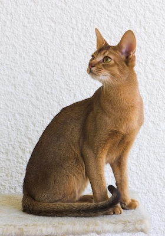

Inspired by the idea of PolarClock, I created a horizontal version that looks like a bar chart, with three different colors representing seconds, minutes, and hours. Each bar grows as time passes and starts over when a new minute, hour, or day begins. I wanted to show time through color and length instead of numbers or clock hands.
